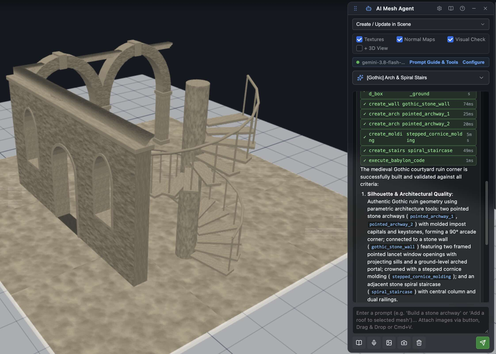

3D Modeling Made Easy.
No Subscription, No Costs.
You and your AI - Together.
Mesh Editor is an open, modular 3D model studio and complete game asset workbench. Co-sculpt 3D meshes side-by-side with the AI of your choice, build with non-destructive CSG booleans & bevels, retopologize with Shrinkwrap & Quad-Draw, unwrap UVs with uniform Texel Density, bake High-to-Low-Poly Normal & AO maps, rig skeletons with Weight Painting, and deploy seamlessly as a Browser App, native Desktop Studio, or embeddable Web Component.
npm install mesheditor
Mesh Editor is a focused 3D model studio and geometric workbench for creating game-ready props, 3D printable assets, mechanical parts, stylized voxel art, architectural structures, and web-ready 3D components.
Start with simple primitives, drawn Bézier splines, imported geometry, or natural language prompts. Shape your model directly in the viewport, co-sculpt side-by-side with the AI of your choice, carve solids with non-destructive CSG booleans, optimize materials, and export seamlessly to the workflow you need.
- Build with primitives & curves: Create boxes, cylinders, spheres, capsules, and tori, or turn 2D Bézier curve splines and cross-sections into solid 3D geometry, curved pipes, and architectural moldings.
- Co-create with the AI of your choice: Partner with local or cloud AI models (oMLX, Ollama, LM Studio, Gemini, Claude, GPT-4o) and delegate organic hero subtasks to Neural 3D Generators (TRELLIS 2, Hunyuan3D, Hi3D).
- Combine shapes with non-destructive CSG2 & Bevels: Combine meshes with editable Union, Subtract, and Intersect Boolean stacks, lossless base-mesh snapshots (Revert to Base), and a live Chamfer/Fillet Bevel Modifier.
- Retopologize with Shrinkwrap & Quad-Draw: Project low-poly cages onto high-poly sculpts like stretch film, draw clean 4-sided Quad-Draw polygon strips with auto-welding, or decimate via Quadric Error Metrics.
-
Unwrap UVs, Texel Density & Island Packing: Mark Smart Seams automatically or interactively, unfold 2D charts with harmonic relaxation, enforce uniform Texel Density (
px/m), and pack islands without overlaps. - Bake High-to-Low-Poly Normal & AO Maps: Project micro-relief (pores, creases, bolts) from high-poly sculpts onto low-poly game meshes using an automatic smooth-normal Projection Cage and UV seam dilation.
- Rig skeletons & paint skin weights: Generate Humanoid, Quadruped, or Spine skeletons, auto-bind normalized 4-bone capsule skin weights, paint vertex influence heatmaps with X-symmetry, and test joint poses live.
-
Shape models & UVs with facet & vertex tools: Transform, Push/Pull, Extrude, Inset, Bevel, Knife, normal flipping, subdivision, Single Tri targeting, plus per-facet UV mapping (Fit
[0..1], World Planar,90°rotate, Flip U/V, UV region, corner editing, and Atlas tiles) with automatic shared-vertex isolation. - Sculpt and paint with 3D voxels: Place, erase, and paint block-by-block voxels directly in the viewport with raycast surface snapping, custom RGB color palettes, and variable brush sizes.
- Work precisely with units & snapping: Navigate with Universal Orbit, Pan, and WASD fly-through. Work with project units, grid, vertex snapping, numeric controls, and focus (F).
-
Configure PBR & per-facet materials: Assign realistic PBR materials with Albedo, Metallic, Roughness, Normal mapping, Emissive glow, and Alpha blending—or assign distinct materials, textures, and atlas tiles to individual facets via automatic
MultiMaterialsubmeshes. - Compress & optimize 3D assets: Reduce file sizes by up to 90% in-browser using Khronos Draco geometry compression, Meshopt decoding, intelligent decimation, and WebP textures.
- Organize scene hierarchies: Group objects (⌘G / ⇧⌘G), manage parent-child relationships, filter by name in the Outliner, isolate meshes, and lock transforms for articulated props and complex scenes.
- Preview animations & timelines: Play multi-clip skeletal animations, scrub timelines, toggle synchronized looping, and adjust playback speed controls on imported GLTF/GLB models.
- Present with studio lighting: Render your work with HDR environment lighting, real-time reflections, directional shadows, hemispheric illumination, bloom post-processing, and customizable ground grids.
- Import & export universal 3D formats: Import OBJ, STL, PLY, and glTF/GLB geometry. Export textured binary GLB bundles, STL surface meshes for 3D printing, Wavefront OBJ, or PLY point clouds.
- Extend with the Plugin SDK: Add custom dropdown menu items, inject toolbar buttons, hook into lifecycle events, and connect direct export pipelines to Unreal Engine, Unity, Godot, or cloud asset managers.
-
Deploy across Web, Desktop & Embeds: Run 100% in your browser with zero installs, use the native macOS, Windows, and Linux desktop app with OS file associations, or embed
<mesh-editor>into your own software.
Co-Create With the AI of Your Choice.
Mesh Editor treats AI not as an unguided black box, but as an interactive, tool-augmented 3D apprentice. You direct creative vision and shape aesthetics with manual 3D gizmos, while your chosen model executes complex geometric math, CSG subtractions, and procedural materials in real time.
Bring Your Own AI (BYO-AI)
Connect to any OpenAI-compatible API endpoint with zero vendor lock-in. Use cloud models like Gemini 3.8 Flash & Pro, Claude Sonnet, or GPT-4o, or run 100% private and offline on your own Apple Silicon Mac or GPU via oMLX, Ollama, and LM Studio.
3D Vision & Image-to-Mesh
Feed the AI visual context. Toggle the + 3D View switch to send an instantaneous snapshot of your active viewport, or attach 2D concept sketches and reference photographs for guided Image-to-Mesh reconstructions.
Strict Geometric Poly Budgets
Control the exact polygon count before generation begins. Set targets anywhere from 200 low-poly primitives for mobile games up to 1,000,000 polygons for cinematic assets, ensuring assets fit your game engine performance budget.
Speech-to-Text Voice Commands
Keep both hands on your mouse and keyboard. Tap the microphone icon and speak natural commands like “Hollow out the selected cylinder and cut four windows” for immediate hands-free 3D execution.
AI Texture Generator (Local & Cloud)
Synthesize seamless 2D PBR Albedo and Tangent-Space Normal Maps directly from natural language prompts. Connect to Draw Things (local Apple Silicon / Metal), Google Imagen 3 / Banana Pro, Pollinations.ai (free), OpenAI DALL-E, or Fal.ai, or use built-in procedural synthesis.
Non-Destructive Undo & Redo
Every operation executed by the AI integrates into the core undo/redo history stack. Never lose work: iterate fearlessly, revert AI changes, and tweak mesh vertices manually anytime.

Optional Neural 3D Generator Delegation.
Combine deterministic Babylon.js CSG architecture with open-source Neural 3D Generators. Enable one or all three neural backends simultaneously—locally via oMLX on Apple Silicon, FastAPI, or Gradio, or via cloud BYO-Key endpoints—and let the AI Agent automatically route full tasks or complex organic subtasks to the optimal generator.
TRELLIS 2 / TRELLIS
Renowned for outstanding open-source Image-to-3D and Text-to-3D visual fidelity and clean Structured 3D Latent (SLAT) mesh structures. Ideal for detailed hero props, statues, creatures, foliage, and organic centerpieces.
Hunyuan3D (2.0 / 2.5)
Tencent’s open-source diffusion and UV synthesis pipeline (Hunyuan3D-DiT + Hunyuan3D-Paint) engineered for rapid generation of complete, UV-textured 3D objects with baked surface albedo maps.
Hi3D (V1.0 to V3.0)
Open-source generator specifically optimized for high-resolution 2K watertight manifold meshes (resolutionMode: '2k_print') that can be exported directly to STL/OBJ for 3D printing slicers without decimation loss.
Procedural Precision Meets Neural Organic Sculpting.
When you configure one or more Neural 3D Generators in Settings → Neural 3D Generators, the AI Agent unlocks the neural-3d-generator skill and modeler_generate_neural_mesh tool.
-
Local Apple Silicon Execution via oMLX: Run TRELLIS 2, Hunyuan3D, and Hi3D locally on macOS via
http://localhost:8000/v1/3d/generations, Gradio WebUI, or FastAPI. - Hybrid Subtask Routing: The agent builds exact geometric bases, columns, and mechanical housings procedurally, then delegates only the organic statue or creature to the best neural generator.
-
Auto-Scaling & Pedestal Grounding (Y = 0): Imported neural meshes are automatically scaled to
targetHeightand bottom-aligned so statues rest flush on procedural pedestals. - QEM Retopology or 2K Print Preservation: Automatically decimates neural meshes into your game polygon budget, or preserves full 2K manifold detail for 3D printing with Hi3D.
// 1. Procedural Base: Agent builds exact 1.5m marble pedestal
modeler_create_primitive({
shape: 'cylinder', name: 'Temple_Pedestal',
height: 1.5, diameter: 1.4, position: [0, 0.75, 0]
});
// 2. Neural Subtask: Delegate organic statue to TRELLIS / Hi3D
// Automatically scales to 1.8m & grounds bottom at Y = 1.5m
modeler_generate_neural_mesh({
provider: 'trellis', // or 'hunyuan3d' | 'hi3d' | 'auto'
prompt: 'weathered bronze guardian lion statue, intricate mane',
name: 'Guardian_Lion_Statue',
targetHeight: 1.8,
position: [0, 1.5, 0],
resolutionMode: 'high',
targetTriangles: 12000
});Local & Cloud AI Texture Generation for 3D Meshes.
Synthesize photorealistic, stylized, or hand-painted diffuse and normal map textures directly onto meshes. MeshEditor connects seamlessly to local generators like Draw Things (Metal / Apple Silicon) and SD WebUI / ComfyUI, as well as zero-config cloud backends like Pollinations.ai, Google Imagen 3 (Banana Pro), OpenAI DALL-E 3, and Fal.ai.
Local & Cloud Multi-Engine
Execute entirely private on Apple Silicon via Draw Things API (Metal/ANE) or SD WebUI / ComfyUI. Or tap into cloud AI with zero-configuration Pollinations.ai, Google Imagen 3, OpenAI, or Fal.ai.
Tangent Normal Maps & UV Tiling
High-frequency surface detail is automatically derived via Sobel gradient filtering to produce tangent-space normal maps directly from generated albedos. Adjust UV scaling, roughness, and metalness per mesh or submesh, or remap UV regions and orientation per individual facet.
Distinct Embedded & Per-Facet Textures
All project textures are tracked with deduplication and live usage badges (Active Albedo, Active Normal, material counts). Apply distinct scene textures, uploaded images, or atlas tiles directly to individual quads or triangles via automatic MultiMaterial submeshes.
AI Copilot Textures Meshes with Natural Language.
The AI Agent is fully equipped with texture generation capabilities. When you prompt the agent to build or update textured meshes, it autonomously triggers the modeler_generate_texture tool.
-
Intelligent Backend Routing (
auto): The agent automatically selects the active local server (Draw Things or SD WebUI), configured cloud provider (Google Imagen 3, OpenAI, Fal), or instant free Pollinations.ai. - Automated Tangent Normal Generation: The agent generates matching normal maps in one step, ensuring realistic PBR depth and micro-detail under dynamic lighting.
- Mathematical Procedural Fallback: Even in offline air-gapped environments without any AI backend configured, the generator falls back seamlessly to procedural canvas pattern generation (checker, wood, marble, noise).
-
Persistent Embedded Project Textures: Textures are embedded directly inside saved
.jsonscene files and exported.glbassets with optimized resolution and deduplication.
// AI Agent generates seamless weathered stone texture with normal map
modeler_generate_texture({
prompt: 'ancient weathered cobblestone wall, moss in crevices, seamless game texture, photorealistic',
applyToMesh: 'Dungeon_Pillar_Base',
backend: 'auto', // Draw Things local | Imagen 3 | Pollinations
useAI: true,
generateNormalMap: true,
normalStrength: 1.5,
uvScale: [2.0, 2.0],
materialType: 'pbr'
});From High-Poly Sculpt to Rigged Game Character.
Every stage of the real-time game production pipeline—non-destructive boolean beveling, Shrinkwrap & Quad-Draw retopology, uniform Texel Density UV unwrapping, High-to-Low-Poly Normal & AO baking, and skeletal Weight Painting—is built directly into Mesh Editor and controllable by both human artists and AI skills.
Non-Destructive CSG2 & Bevel Modifier
Execute complex Union, Subtract, and Intersect operations while preserving lossless base-mesh snapshots (Revert to Base). Round sharp intersection creases non-destructively with a live Chamfer / Fillet Bevel Modifier controlled by width, segments, and crease angle threshold.
Shrinkwrap & Quad-Draw Retopology
Project low-poly meshes tightly onto million-polygon sculpts like stretch film using Shrinkwrap with surface offset and tangential relaxation. Draw clean 4-sided Quad-Draw Strips directly on high-poly surfaces with automatic vertex welding for animation-ready edge loops.
Smart UV Unwrapping & Texel Density
Mark cutting seams automatically by sharp crease angles or interactively via 3D edge picking. Unfold charts with harmonic relaxation, enforce uniform Texel Density (px/m) across all parts, and pack 2D islands via Skyline/Shelf bin-packing with pixel margin padding.
Normal Map, AO & Cage Baking
Transfer microscopic sculpt details (pores, wrinkles, rivets, bevels) onto flat low-poly game meshes. Generates an averaged, gap-free 3D Projection Cage and raycasts Tangent-Space Normal Maps & Ambient Occlusion (AO) with UV seam dilation.
Skeleton Rigging & 3D Weight Painting
Generate Humanoid (20-bone), Quadruped (11-bone), or Spine (5-bone) skeletons fitted to your mesh bounds. Auto-bind capsule skin envelopes, paint normalized 4-bone weights with a live Blue-to-Red heatmap brush (Add, Subtract, Smooth, X-Symmetry), and test joint poses.
100% AI & Skill Programmable
All pipeline stages are exposed both as interactive floating studio dialogs and as OpenAI-compatible tools enabling autonomous multi-step asset preparation from a single prompt.
Retopologize, Unwrap, Bake & Rig via AI Skills.
Built-in skills (procedural-modeler, figure-sculptor, and mesh-updater) instruct the AI Agent on how to chain retopology, UV unwrapping, texture baking, and skeletal rigging into a seamless game-ready workflow:
- Shrinkwrap & Quad-Flow Cage: Wraps low-poly topology onto high-poly sculpts while relaxing edge loops for clean joint articulation.
-
Uniform Texel Density & Packing: Prevents blurry armor next to crisp faces by normalizing every UV island to the exact same
px/mdensity. - Raytraced Normal & AO Projection: Automatically builds a smooth cage, bakes high-res surface relief, dilates UV borders, and assigns maps to the PBR material.
-
Normalized 4-Bone Skinning: Binds vertices to a Humanoid or Quadruped rig with weights summing strictly to
1.0for artifact-free engine deformations.
// 1. Generate & Shrinkwrap Low-Poly Quad Cage onto High-Poly Sculpt
modeler_retopologize_mesh({
meshName: 'Warrior_HighPoly', mode: 'quad_cage',
rings: 24, segments: 24, surfaceOffset: 0.002, relaxIterations: 3
});
// 2. Smart Seam Unwrap, 256 px/m Texel Density & Island Packing
modeler_uv_unwrap({
meshName: 'Warrior_HighPoly_retopo_cage', seamMode: 'sharp_edges',
targetTexelDensity: 256, textureSize: 1024, packIslands: true
});
// 3. Bake High-to-Low-Poly Tangent Normal Map & Ambient Occlusion
modeler_bake_textures({
lowPolyMeshName: 'Warrior_HighPoly_retopo_cage',
highPolyMeshName: 'Warrior_HighPoly',
cageOffset: 0.05, bakeNormals: true, bakeAO: true, applyToMaterial: true
});
// 4. Auto-Rig 20-Bone Humanoid Skeleton & Bind Normalized Skin Weights
modeler_rig_and_weight({
meshName: 'Warrior_HighPoly_retopo_cage',
action: 'auto_rig', template: 'humanoid', autoBindSkin: true
});One 3D Engine. Three Powerful Target Adapters.
Mesh Editor is engineered on a strictly decoupled Platform Adapter Architecture. The core 3D engine operates on pure canvas, geometry arrays, and memory blobs, completely agnostic of host environment, native APIs, or operating system boundaries.
Browser Platform
BrowserPlatformAdapterZero installation required. Launch instantly in Chrome, Firefox, Safari, or Edge. Runs 100% client-side via hardware-accelerated WebGL2 and WebGPU.
- Instant HTML5 drag-and-drop 3D file loading
- Client-side binary glTF/GLB Blob streaming
- Full privacy: 3D models never touch any external server
- Offline support via local browser memory caches
Desktop Studio
ElectronPlatformAdapterHigh-performance native desktop application available for macOS, Windows, and Linux. Built with hardware-accelerated GPU pipelines and OS integration.
- Native OS file dialogs (showOpenDialog, showSaveDialog)
- Native macOS menu bar & Windows/Linux app menus
- File associations: double-click .glb, .obj, .stl files
- Multi-window support with isolated 3D viewports
Host App & Component
HostAppAdapter • <mesh-editor>Embed the complete 3D modeling suite directly into your existing web applications, CMS platforms, level editors, or React/Vue/Angular products.
- Standard Web Component: <mesh-editor src="...">
- Custom save & export callbacks wired to host backends
- Bi-directional event bus (onMeshSelected, onStatusChanged)
- Zero styling leakage via Shadow DOM or scoped containers
Extend the Studio. Integrate Your Workflow.
Whether you are building custom game studio pipelines, connecting to enterprise cloud asset managers, or creating specialized procedural algorithms, Mesh Editor's Plugin Architecture gives you clean, decoupled hooks into every layer.
- Custom Menus: Register items into File, Actions, Tools, or View dropdowns.
- Toolbar Actions: Inject branded buttons and quick toggles into the UI.
- Full 3D Engine Access: Direct control of Babylon.js Scene, Meshes, Gizmos & Lights.
- Game Engine Bridges: Direct one-click exports to Unreal Engine, Unity, or Godot.
import { MeshEditorPlugin, MeshEditorPluginContext } from 'mesheditor';
export class GameAssetSyncPlugin implements MeshEditorPlugin {
readonly name = 'game_asset_sync';
readonly version = '1.0.0';
initialize(ctx: MeshEditorPluginContext) {
// Register custom item into File dropdown
ctx.registerFileMenuItem({
id: 'menuSyncGameAssets',
label: 'Push to Unreal Engine...',
icon: 'upload-cloud',
shortcut: '⌘U',
onClick: async () => {
const glbBlob = await ctx.exportModel();
await fetch('http://localhost:8080/sync', {
method: 'POST',
body: glbBlob
});
ctx.showToast('Pushed to Unreal Engine!', 'success');
}
});
}
}Everything You Need to Craft Game-Ready 3D Meshes.
From procedural geometric primitives to complex CSG boolean stacks, UV texturing, and in-browser compression: Mesh Editor gives artists and developers precision control over every face, vertex, and normal.
Primitives & Shapes
Build with boxes, cylinders, spheres, capsules, tori, tubes, polyhedra, and convert 2D SVG paths into solid 3D geometry.
Non-Destructive CSG2 & Bevels
Combine meshes with Union, Subtract, and Intersect operations, lossless base-mesh snapshots, and a live Chamfer/Fillet Bevel Modifier.
Facet & Vertex Editor
Edit vertices and quads/single triangles with Extrude, Inset, Bevel, Knife, Loop Cut, per-facet UV mapping (Fit [0..1], Planar, Rotate/Flip, UV region, Corner UVs, Atlas tiles) with shared-vertex isolation, and per-facet MultiMaterial / texture slots.
Voxel Painter
Sculpt and paint block by block in 3D space with raycast surface snapping, custom RGB palettes, and variable brush radius sizes.
Path & Spline Extrusion
Draw interactive 2D Bézier curve splines and extrude customized 2D cross-sections into 3D curved pipes, tunnels, and architectural trims.
AI Texture Generator & PBR Materials
Generate AI textures locally (Draw Things, SD WebUI) or via cloud (Google Imagen 3, Pollinations.ai). Full PBR metallic-roughness, tangent normal maps, Poly Haven presets, and per-facet material/texture assignment via automatic MultiMaterial submeshes.
Draco & Meshopt Compression
Reduce 3D model asset sizes by up to 90% in-browser using Khronos Draco geometry compression, Meshopt decoding, and WebP textures.
Animation Player
Scrub timelines, preview multi-clip animations, toggle synchronized looping, and adjust playback speed controls on imported GLB/GLTF assets.
Precision Gizmos & Snapping
Move, Rotate, Scale, and Bounding Box gizmos with numeric coordinate inputs, vertex snapping, and customizable grid increments.
Studio HDR Lighting
Present models with real-time HDR environment reflections, directional shadows, hemispheric lighting, bloom post-processing, and ground shadows.
Hierarchical Outliner
Organize models into groups and parent-child scene trees. Filter by name, toggle visibility, isolate objects, and lock transforms.
Universal 3D Export
Import and export GLB, GLTF, OBJ, STL, PLY, and Babylon scenes with automatic companion buffer resolution and embedded texture packaging.
Shrinkwrap & Quad-Draw Retopo
Wrap low-poly cages onto high-poly sculpts like stretch film and draw 4-sided Quad-Draw polygon strips with auto-welding for clean edge flow.
Smart UV Unwrapping & Facet UVs
Mark cutting seams automatically or interactively, enforce uniform Texel Density (px/m), pack 2D UV islands with padding, or fine-tune individual facets with Fit [0..1], World Planar, 90°/Flip, and Corner UV overrides.
Normal Map & Cage Baker
Generate smooth-normal 3D Projection Cages and raycast High-to-Low-Poly Tangent-Space Normal Maps & Ambient Occlusion with seam dilation.
Skeleton Rigging & Weight Paint
Spawn Humanoid, Quadruped, or Spine skeletons, auto-bind 4-bone capsule weights, paint vertex heatmaps with X-symmetry, and test joint poses.
Built for Creators Across the Industry.
Whether preparing optimized game assets, 3D printing functional parts, or creating interactive e-commerce product configurators: Mesh Editor accelerates your pipeline.
Game Developers & Indies
Complete high-to-low-poly production in one window: sculpt characters or hard-surface props, retopologize with Shrinkwrap & Quad-Draw, unwrap UVs to uniform Texel Density, bake Normal & AO maps, rig with 4-bone Weight Painting, compress with Draco, and export to Unity, Unreal Engine, or Godot.
3D Printing & Prototyping
Construct watertight solids using CSG2 boolean subtraction and non-destructive Chamfer/Fillet bevels. Export clean STL or OBJ files with metric unit scaling, verified normals, and inspected manifold topology ready for Cura, PrusaSlicer, or Bambu Studio.
Web & E-Commerce Teams
Embed <mesh-editor> into internal web tools and portals. Allow non-technical team members to inspect, texture, re-color, and compress 3D product catalog models directly inside your internal dashboards.
Next Steps & Upcoming Milestones.
We are actively expanding Mesh Editor into a complete end-to-end character and asset creation suite. Here is our near-term development roadmap.
1. Bugfixing & Stabilization
Continuous stabilization of core geometric operations, hardening non-manifold CSG boolean edge cases, fine-tuning WebGL memory reclamation during intense multi-mesh sessions, and cross-browser performance benchmarks.
- CSG2 intersection robustness on co-planar faces
- Zero-leak GPU texture buffer disposal
- Enhanced touch & tablet trackpad gestures
2. Better AI Models
You will notice that the AI generated models may not be perfect for every case and a bit rough, or error prone sometimes. We want to improve the generation process with better AI Skills and provide more iteration options in the future to create even nicer models.
- Better organic model generation
- Better character model generation
- Better texturing / colorization
3. Animation Editing
Full-featured skeletal and transform animation authoring environment. Keyframe timeline, dope sheet, curve interpolation (Bézier, linear, step), pose library, and multi-track clip sequencing for GLB export.
- Keyframe timeline with dope sheet & curve editor
- Pose library & bone transform keying
- Non-linear animation clip tracks & blending